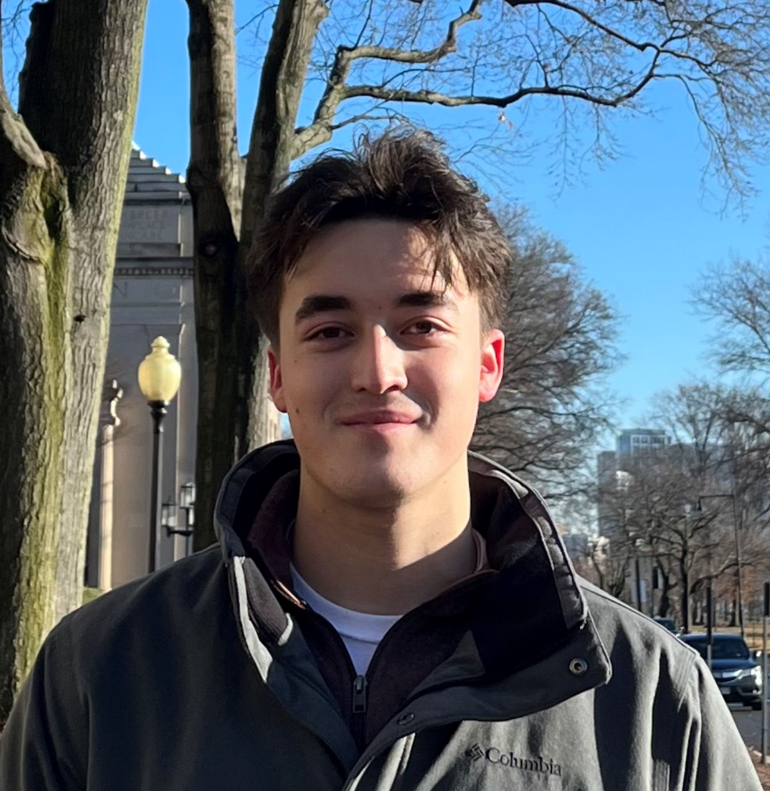

I am Jarett Dewbury, a second-year undergraduate studying Biomedical Engineering
at the University of Waterloo. I am also the co-founder of WAT.ai, the University of Waterloo's artificial intelligence student design team.
Currently, I am a machine learning researcher at Harvard Medical School and Massachusetts General Hospital working on semi and fully automated image processing applications for tissue segmentation and disease understanding.
I am interested in the intersection of medicine and machine learning. My current research interests include the development of transformative and novel AI-enabled tools to aid clinicians in disease diagnosis and understanding.
Outside of my academic and professional pursuits, I enjoy staying active in the gym and engaging in a variety of sports and outdoor activities. Before attending university, I spent a large amount of my early life playing junior hockey and pursuing my athletic goals alognside my academic ambitions.
If you share similar interests or are seeking guidance in your own academic or professional endeavors, feel free to reach out to me through LinkedIn or by email. I am always happy to connect and discuss potential collaborations, or simply exchange ideas and insights.
LinkedIn 〳 Twitter 〳 Email 〳 Github